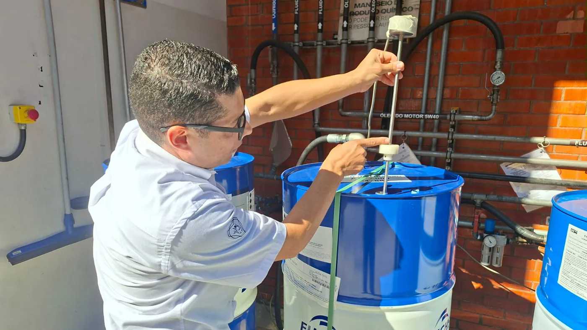

Una observación cotidiana en la planta de Scania Brasil terminó convirtiéndose en un ahorro anual estimado de R$96.000. Adriano Ferreira, técnico de montaje conocido como Paixão, detectó que los tambores usados para alimentar con aceite las cajas de dirección conservaban producto cuando el sistema ya solicitaba reemplazarlos.
Después de nueve años en la compañía, Ferreira conocía la operación suficiente para distinguir entre una pequeña variación y una pérdida repetitiva. Consultó qué ocurría con el remanente y comprobó que no era reutilizado. En lugar de aceptar el desperdicio como parte normal del proceso, llevó la observación a supervisión e ingeniería.
Qué cambió en el sistema
La solución tuvo dos acciones: colocar el tambor en un ángulo más favorable mediante una cuña y ajustar el sensor que ordenaba el abastecimiento. La nueva posición permite que el aceite llegue al punto de succión y el sensor evita declarar vacío el recipiente antes de tiempo.
Según Scania, el cambio no requirió inversión. La empresa estima que ahora se aprovechan unos 30 litros que antes quedaban sin utilizar cada dos días. La magnitud aparece cuando se multiplica una pérdida pequeña por todos los ciclos de un año.
Esto no significa que cualquier tambor deba inclinarse de manera improvisada. La cuña, la estabilidad, la conexión y la calibración fueron probadas junto con los responsables técnicos. Un cambio sobre almacenamiento o bombeo de lubricantes debe revisar seguridad, contaminación y especificaciones del proveedor.
Por qué el desperdicio puede pasar inadvertido
En un taller o una fábrica, el indicador de vacío suele interpretarse como una verdad absoluta. Pero el sensor informa una condición en un punto determinado; no pesa el recipiente ni garantiza que no quede líquido en otras zonas. La geometría del envase y la ubicación de la succión pueden dejar un volumen fuera de alcance.
Además, el remanente por cambio parece insignificante frente al contenido total. Si no se registra frecuencia, volumen y costo, permanece oculto. La mejora de Scania convirtió una impresión visual en una medición concreta y luego en un valor económico.

Una lección para talleres de camiones
El caso industrial puede trasladarse a depósitos y talleres. Aceite nuevo que queda en envases, producto servido de más, filtros mal almacenados o mangueras que gotean son pérdidas unitarias pequeñas, pero constantes. También pueden generar suciedad y riesgo de caída.
El primer paso es observar un proceso completo, desde que el repuesto o fluido entra hasta que se utiliza y descarta. Luego conviene medir durante una semana: cuántos envases se cambian, cuánto remanente queda y qué tiempo consume la tarea.
Cómo evaluar una mejora sin comprometer calidad
- Definir el problema: registrar dónde, cuándo y con qué frecuencia aparece la pérdida.
- Medir antes: pesar recipientes o medir volumen para evitar conclusiones basadas sólo en percepción.
- Controlar contaminación: nunca mezclar productos, viscosidades o lotes sin autorización técnica.
- Probar en pequeño: ensayar la solución en un puesto y verificar estabilidad y ergonomía.
- Documentar: dejar posición, calibración y procedimiento para que el resultado no dependa de una persona.
- Medir después: comprobar ahorro, incidentes y efectos sobre el equipo abastecido.
El valor de escuchar a quien hace la tarea
Ferreira no diseñó el sistema original, pero lo operaba con frecuencia. Esa cercanía le permitió ver una oportunidad que podía quedar fuera de un análisis general. Scania destacó la iniciativa en una reunión trimestral de fábrica como ejemplo de mejora continua.
Para que estas ideas aparezcan, el personal necesita un canal sencillo y una respuesta. Si cada propuesta requiere trámites extensos o se interpreta como una crítica, las observaciones dejan de compartirse. El rol de ingeniería es validar la idea y convertirla en un estándar seguro.
Más ahorro que el precio del aceite
El cálculo difundido se concentra en R$8.000 mensuales de producto recuperado. El efecto puede incluir menos residuos, menor manipulación de tambores y un área más limpia. También evita comprar y transportar una cantidad equivalente de aceite que no llegaría al vehículo.
No todos los beneficios deben sumarse sin medición. Una evaluación seria separa ahorro directo, tiempo de trabajo, reducción de residuos y posibles riesgos. Esa claridad permite decidir si una solución debe replicarse en otros puestos.
Relevancia para Argentina
La mejora ocurrió en Scania Brasil, dentro de la misma región industrial y con condiciones más cercanas que muchos casos europeos. No describe un nuevo camión, pero sí una parte esencial del mundo del transporte: cómo se fabrican y mantienen sus componentes.
En un contexto de costos altos y repuestos valiosos, controlar consumos invisibles puede liberar recursos sin reducir calidad. La clave es no confundir ahorro con atajo. El aceite debe conservar especificación, limpieza y trazabilidad desde el envase hasta la pieza.
Mirar, medir y estandarizar
La historia de Paixão resume una secuencia útil: detectar una anomalía, consultar el destino del material, probar junto a especialistas, medir el resultado y formalizar el cambio. La solución fue sencilla porque el problema se entendió bien.
Para una flota o un taller, el mensaje es práctico. Las mejoras no siempre llegan con una máquina nueva. A veces comienzan al observar con atención aquello que se repite todos los días y darle a esa observación un método.